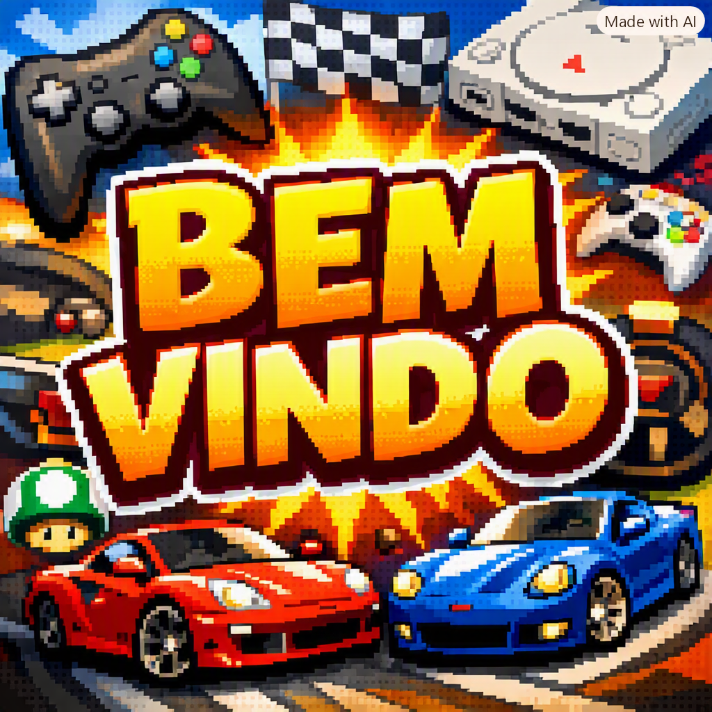
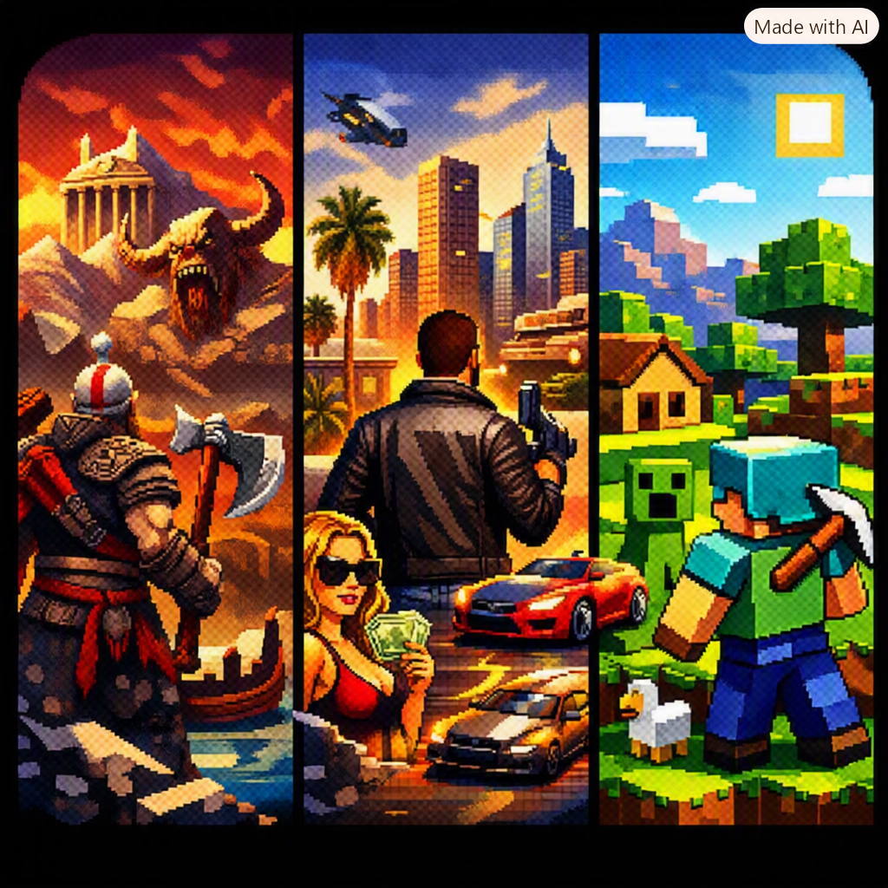
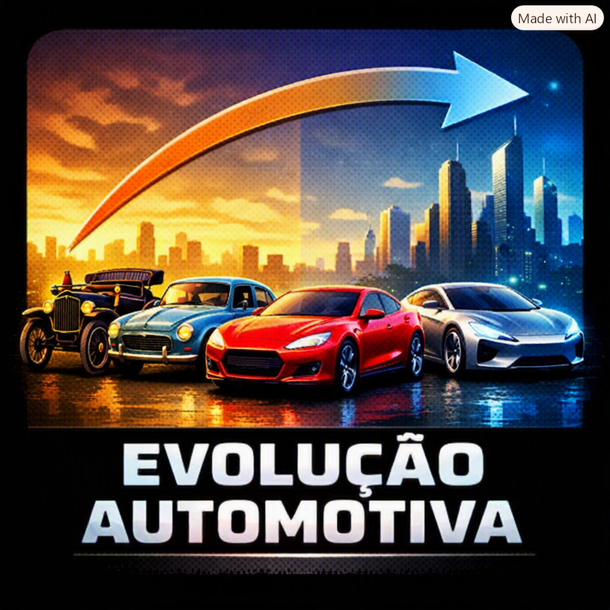

Meu primeiro post
Por: Henry Pietro
Bem vindos ao meu blog de games e evolução automotiva.
Vou compartilhar sobre games e evolução automotiva

Meu primeiro post
Por: Henry Pietro
Bem vindos ao meu blog de games e evolução automotiva.

Por: Henry Pietro
os escolhidos:

Conversores RetroTINK
Por: Rodrigo Mendes
A linha de produtos RetroTINK consiste em scalers, conversores e cabos RGB sem atraso, criados pelo desenvolvedor Mike Chi, e que abrangem todas as faixas de preço. Todos são dispositivos totalmente plug and play, sem necessidade de ajustes... embora ofereçam opções incríveis para quem quer extrair o máximo desempenho de seus consoles clássicos!